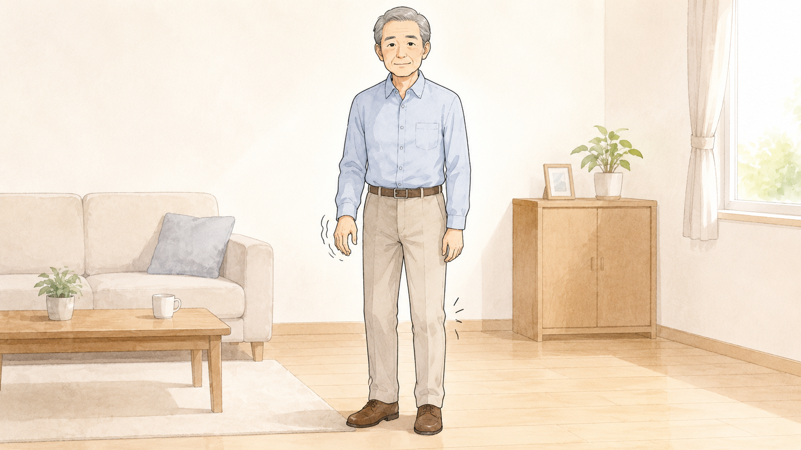
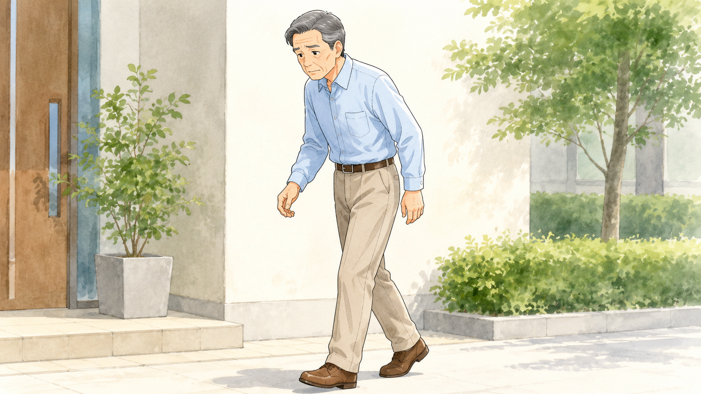
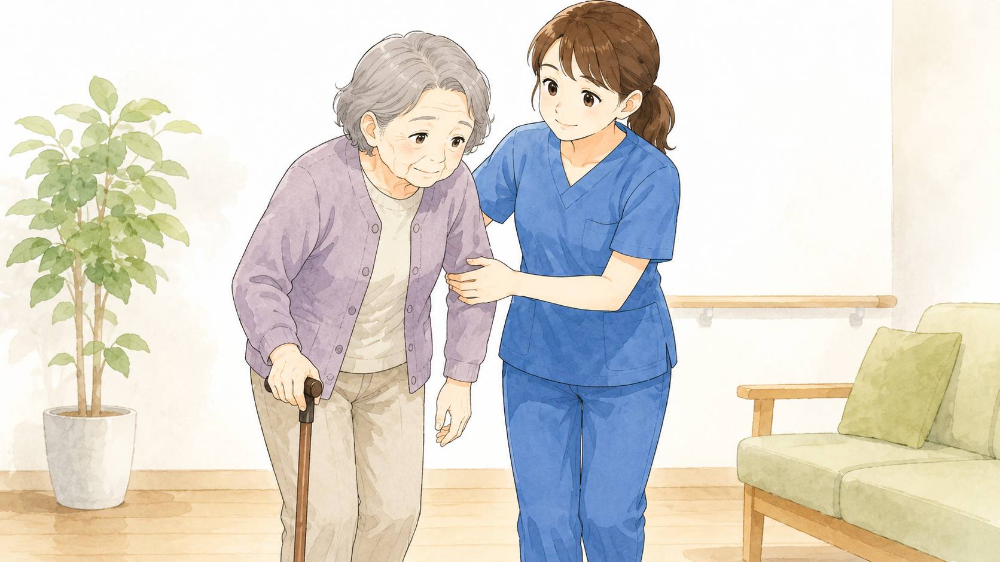
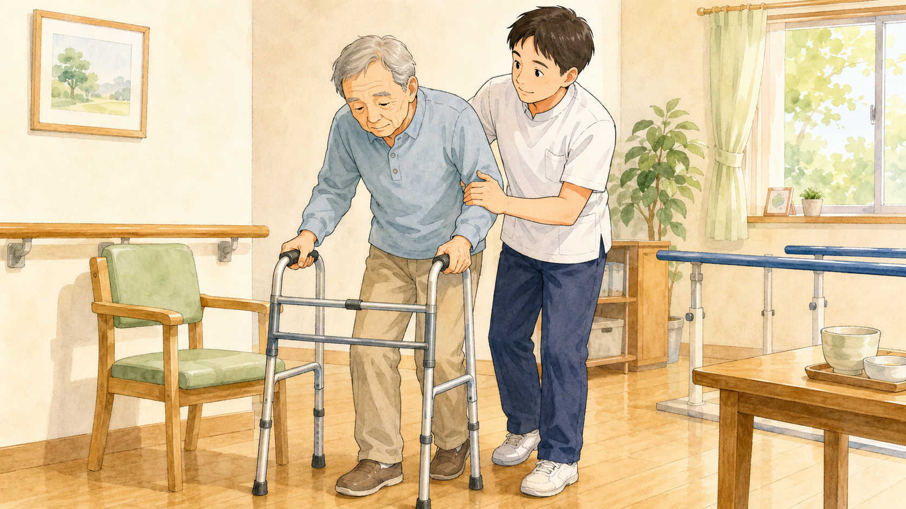
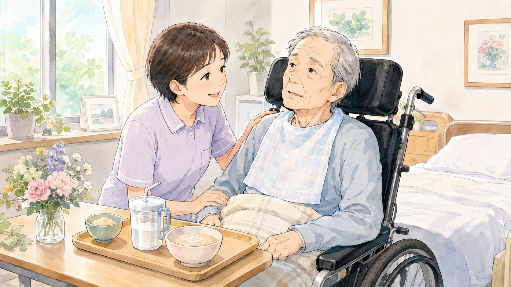
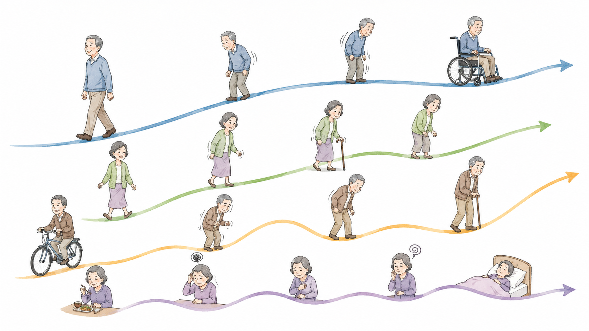
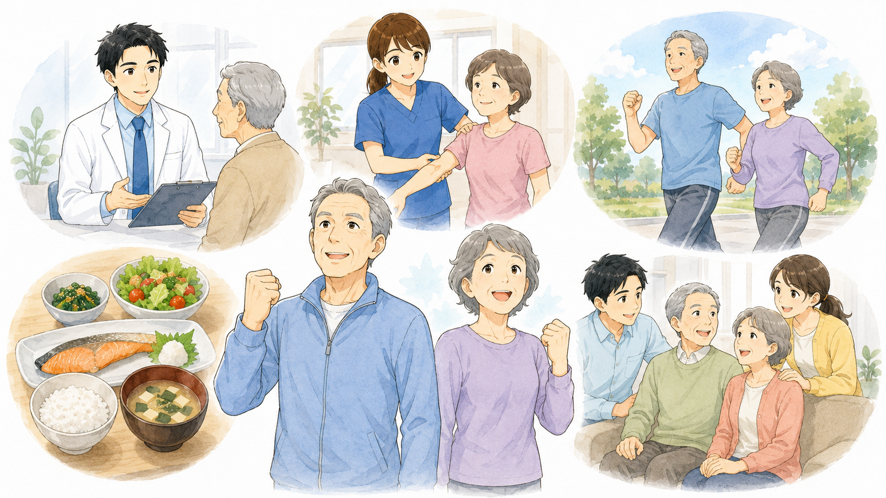

パーキンソン病の
進行について
パーキンソン病はゆっくり進行する神経変性疾患であり、個人差はありますが、一般的には数年から数十年かけて症状が進行していきます。進行のスピードや症状の現れ方は人によって異なりますが、病気の進行度を示すために、以下のようなステージ分類がよく用いられます。
パーキンソン病の
進行ステージ
（ホーエン・ヤールの重症度分類）
パーキンソン病の進行度を大まかに把握するために、「ホーエン・ヤール（Hoehn & Yahr）の重症度分類」が使われます。
ヤールⅠ度

- 体の片側にのみ症状が現れる（例：片手の震え、片足の動きにくさ）。
- 日常生活への影響はほとんどなく、仕事や家事も通常通り行える。
- バランスや歩行は問題なし。
ヤールⅡ度

- 両側に症状が現れる（左右両方の手足が影響を受ける）。
- 姿勢が少し前傾し、動きが鈍くなる（寡動）。
- バランスはまだ保たれており、転倒は少ない。
- 日常生活に影響が出始めるが、基本的な動作は可能。
ヤールⅢ度

- 歩行や姿勢のバランスが悪化し、転倒しやすくなる（姿勢反射障害）。
- 動作がさらに遅くなり、手足のこわばりが強まる。
- 介助なしでも生活できるが、仕事や家事が難しくなる。
- 外出時には注意が必要。
ヤールⅣ度

- 自力での歩行が困難になり、補助器具や介助が必要になる。
- 立ち上がりや方向転換が難しくなる。
- 日常生活の多くの場面でサポートが必要になる。
ヤールⅤ度

- 車椅子や寝たきりの状態になることが多い。
- 介護なしでは生活ができなくなる。
- 嚥下障害（飲み込みの問題）や認知機能の低下が進むことがある。
進行の特徴
パーキンソン病の進行には、以下のような特徴があります。

進行のスピードは個人差が大きい
進行が遅い人もいれば、比較的早く症状が進む人もいます。症状ごとに進む速さが違うことがあります（早期から飲み込みは悪くなるが、長く歩ける方もいれば、逆の方もいます）。
運動症状だけでなく、非運動症状も進行する
パーキンソン病は運動症状（震え、動作の遅れ、筋固縮など）だけでなく、便秘、嗅覚障害、うつ、不眠、認知機能の低下などの非運動症状も進行します。どの非運動症状が出現するかはひとそれぞれです。
症状の変化は波がある
一定の期間は症状が安定しているように見えても、突然進行することがあります。
進行を遅らせる
ための工夫
パーキンソン病の進行を完全に止めることはできませんが、以下の方法は直接的、間接的に症状の進行を遅らせたり、身体機能の維持・向上をさせることができます。

早期から適切な治療を受ける
レボドパやドーパミン作動薬などの薬物治療を適切に行う。早期から治療を受けている人と、遅れて治療を開始した人では、将来的な身体機能の維持が異なることが示されてきました。
運動療法を取り入れる
ウォーキング、ストレッチ、ヨガ、太極拳などが効果的。定期的な運動が進行を遅らせるという研究結果もある。
バランスの取れた食事を心がける
抗酸化作用のある食品（野菜、果物、ナッツなど）を積極的に摂取。タンパク質の摂取タイミングに気をつける（薬の吸収に影響を与えるため）。
専門医と定期的に相談する
定期的な診察を受け、症状の変化に応じた治療を受ける。
家族やサポートネットワークを活用する
家族や介護者と連携し、サポートを受けることが重要。
まとめ